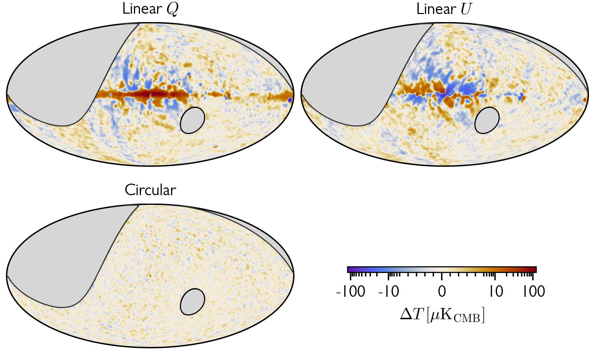
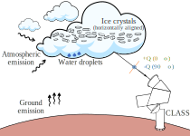
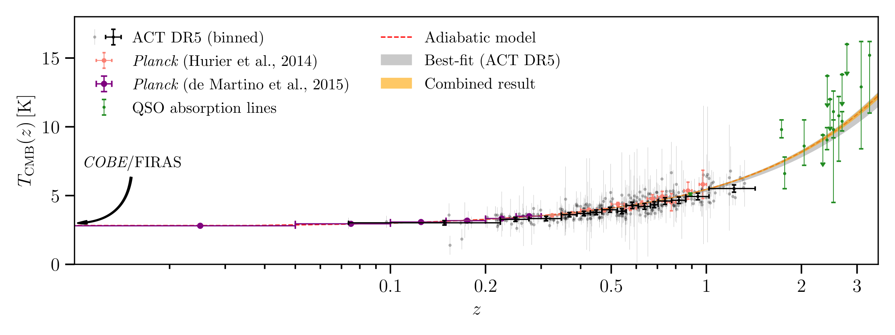
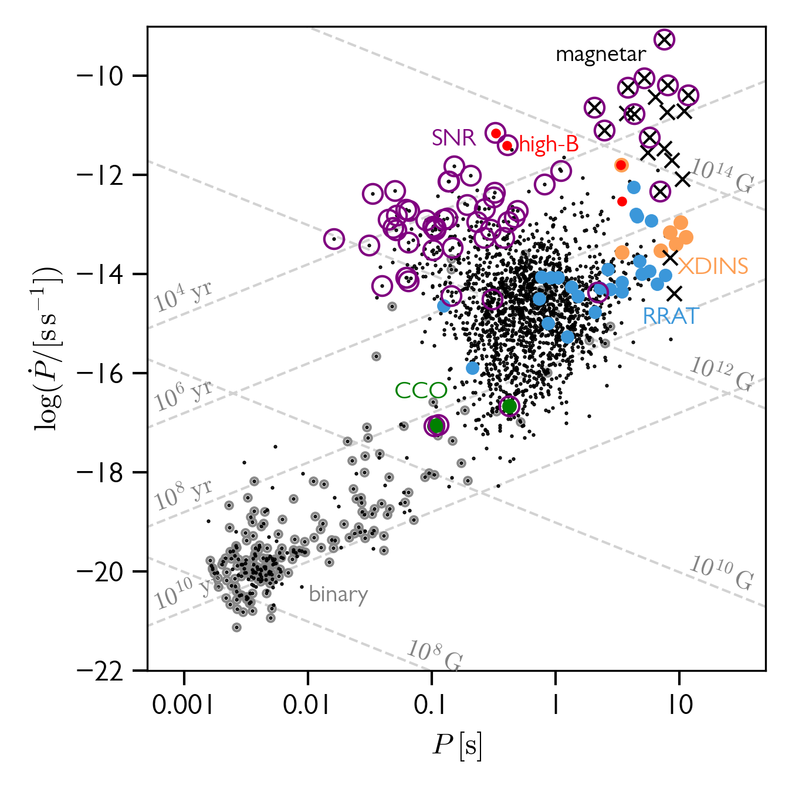

Polarization of the cosmic microwave background (CMB) is a powerful probe of the early universe. While the small angular scale fluctuations of the CMB temperature and polarization maps encode details about the geometry, composition, evolution and initial conditions of the universe, the large-angular-scale polarizations provide supplementary and essential insights into the reionization history as well as the primordial gravitational waves predicted by the postulated inflationary models.
Cosmology Large Angular Scale Surveyor (CLASS) aims to answer these questions by measuring the large-angular-scale polarizations from the ground. CLASS is a four-frequency (40, 90, 150, and 220 GHz) polarimetric telescope array located in the Atacama desert in northern Chile that has seen the first light in 2016. Over the years, we have come to a good understanding of the instrument and the stabilities of the data, released data products that characterize the Galactic foreground emissions, and also made contributions to planetary and atmospheric sciences.
Stay tuned for more CLASS results to come!
Figure credit: M. Petroff
 CLASS 40 GHz telescope has begun its survey in 2016. The data collected during 2016-2022 are processed and characterized as described in Li et. al., 2023a, and the maps are available on LAMBDA. This is the first demonstration of the large-angular scale polarization recovery from ground-based telescopes at 40 GHz. Our initial observation and data processing recovers 75% of the power at angular scales $\ell=20$ and 45% of power down to $\ell=10.$ These maps are used to study the Galactic foregrounds from synchrotron emission (Eimer, Li et. al., 2023), and to place the tightest upper limit on the astrophysical circular polarization background.
Ground-based CMB experiments all face challenges from the atmosphere. Polarization experiments are less susceptible to the atmospheric effects, even on large angular scales since the atmosphere is mostly not linearly polarized (though, check out our detection of the atmospheric circular polarization). Clouds, however, can be a linear polarization source due its Rayleigh scattering of the ambient thermal radiation.  In Li et. al., 2023b, we used the multi-frequency data of CLASS telescopes to study the cloud events at 40, 90, 150, and 220 GHz. Polarization transients localized in sky coordinates are found to be highly correlated with cloud events seen from optical images. These polarization signals are mostly 90-degree oriented (Stokes $-Q$ signals), consistent with the ice crystal scattering. The spectra of the cloud events are roughly consistent with the Rayleigh scattering model, although, there could be effects from liquid water absorption and Mie-scattering that cause deviation from the standard power-law.
This work demonstrates that cloud is a contributor to the atmospheric linear polarization, and has important implications for ongoing and future CMB experiments from the ground.
According to the standard cosmology model, the radiation field temperature decreases as $T_\mathrm{CMB}(z) = T_0 (1+z)$ as the universe expands adiabatically. However, this fundamental assumption is difficult to test due to the lack of "thermometers" in the distant universe.  In Li et. al., 2021, we use the galaxy clusters detected by the Atacama Cosmology Telescope to test this relationship. The hot circumgalactic medium up-scatters the CMB photon through the thermal Sunyaev-Zel'dovich (SZ) effect, which is sensitive to local CMB temperature during the scattering. Leveraging this effect, we confirmed no deviation from the adiabatic model up to `z\approx1.4`.
The hot gas makes up a significant portion of mass of galaxies and galaxy clusters, and is important in regulating their cosmic evolution. The million-Kelvin-gas glow in the soft X-ray band. Though very faint, the emission of strong lines, along with absorption against bright source are used to study the Milky Way and external galaxies. In Li & Bregman 2017, we studied the optical depth effect from the turbulence of the hot gas in the circumgalactic medium of the MW using Monte Carlo radiative transfer simulations. This analysis revised the previous estimates of the hot gas profile of the Milky Way based on Oxygen emission lines, and update the Galactic baryon budget.
Future missions will promote this study to a higher level where high spectral (and spatial) resolution line diagnoses would be possible.
Figure credit: Tumlinson et. al., (2017)
Pulsars are extreme astrophysical laboratories. They exhibit a broad spectrum of emissions, ranging from radio to gamma-rays, and demonstrate diverse timing behaviors. Despite the substantial number of pulsars observed to date, developing a unified model that encapsulates their radiation and pulsation mechanisms, as well as their internal composition, remains a formidable challenge. This is due to persistent obstacles in both theoretical understanding and observational techniques.
 A strangeon star model is prospective in solving these problems. In this picture, a gigantic nucleus made of equal number of u, d, s quarks (strangeon) is more stable at about the nuclear density due to its extra degree of freedom. Strangeon star, being bounded by the residual strong interaction, has a stiff equation-of-state, and could thus be both massive and low-mass. This model has been successfully applied to explain the emission properties of "anomalous" pulsars like X-ray Dim Isolated Neutron Stars (XDINSs, Wang et. al., 2018) and Central Compact Objects (Li et. al., 2018). Other phenomena related to compact objects such as merger (Lai et. al., 2018), glitches, and fast radio bursts could all be better understood in this way.